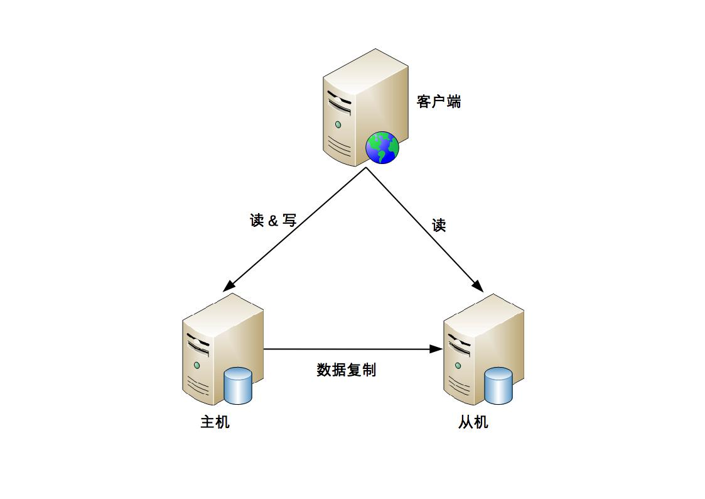
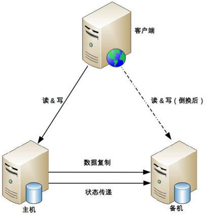

24-高可用存储架构：双机架构
前言
存储高可用方案的本质通过将数据复制到多个存储设备，通过数据冗余的方式来实现高可用。其复杂性主要在于如何应对复制延迟和复制中断带来数据不致的问题。对于一个存储高可用方案需要从以下几个方面分析：
- 数据如何复制？
- 各节点的职责是什么？
- 如何应对复制延迟？
- 如何应对复制中断？
常见的高可用存储架构有：主备、主从、主备/主从切换、主主。
主备
这是一种最常见和最简单的一个存储高可用架构。
基本实现 主备架构中的备机主要起到一个备份的作用，并不承担业务的读写操作。如果把备机切换为主机，需要人工操作。
优点
- 对于客户端而言，不需要感知备机的存在，即使灾难恢复后，原来的备机升级为主机，对于客户端来说，只是切换了主机的地址而已，无须知道是备机切换成了主机。
- 对于主机和备机而言，双方只需要进行数据复制即可，不需要进行状态判断和主备切换等操作。
缺点
- 备机只提供备份功能，不提供读写功能，硬件成本浪费。
- 故障后需要人工干预，无法自动恢复。
内部管理系统使用主备复制架构的情况比较多。
主从
主机负责读写操作，从机只负责读操作，不负责写操作。
基本实现 
优点
- 主从复制架构在主机出现故障后，从机仍然可以提供读操作。
- 从机提供读操作，发挥了硬件的性能。
缺点
- 客户端需要感知主从关系，并将不同的操作发给不同的机器进行处理，复杂度比主备复制高。
- 主从复制架构中，从机负责读操作，如果复制延迟严重，会出现数据不一致的情况。
- 故障时需要人工干预，无法自动恢复。
双机切换
设计关键
主备和主从架构均存在下面二个问题：
- 主机出现故障时，无法提供写操作。
- 出现故障时，无法自动恢复。主机无法恢复，需要人工干预指定新的主机。
双机切换就是为了解决上述问题，包括主备切换和主从切换。即由系统决定主机角色，并完成角色切换。
要实现一个切换方案，必须考虑以下几个设计点：
- 主备间状态判断
主要包括状态传递的渠道和状态检测的内容。
- 状态传递的渠道：是相互间互相连接，还是第三方仲裁？
- 状态检测的内容：例如机器是否掉电、进程是否存在、响应是否缓慢等。
- 切换决策
主要包括以下几个方面：切换时机、切换策略、自动程度。
- 切换时机：什么情况下升级为主机？是机器掉电后，还是主机进程不存在？还是主机响应超过2秒等？
- 切换策略：原来的主机故障恢复后，是要继续切换，使原来的主机继续作为主机，还是原来的主机自动成为备机？
- 自动程度：切换是完全自动的，还是半自动的？例如是否需要人工进行最后的确认。
- 数据冲突解决 当原有主机故障恢复后,新旧主机之间可能存在数据的冲突。数据冲突主要来源于原有主机故障后，数据未复制到原来的备机上。
常见架构
常见的架构有三种：互连式、中介式、模拟式
互连式 
互连式是指主备机直接建立状态传递的通道,比主备复制架构多了一条状态传递通道。这个通道的具体实现方式有几下几种：
- 可以是网络连接(例如各开放一个端口)，也可以是非网络连接(用串可线连接)。
- 可以是主机发送状态信息给备机，也可以是备机到主机来获取信息。
- 可以和数据复制共用一个通道，也可以是单独的一个通道。
- 状态通道可以是一条，也可以是多条,还可以不同类型通道的混合。
客户端也需要做一些改变，常见的方式有以下几种：
- 为了切换后不影响客户端的访问,主机和备机间共享一个对客户端来说唯一的地址。例如虚拟IP,主机需要绑定这个虚拟IP。
- 客户端同时记录主备机的地址，哪个能够访问就访问哪个。备机接收到客户端的请求时，会直接拒绝请求。
互连式的主要优缺点：
如果状态通道本身出现故障，备机也会认为主机出现故障，会把自己升级为主机，而原先主机并没有出现故障，此时会同时出现二个主机。
虽然可以通过增加多个通道来增强状态传递的可靠性，但是这只是降低了发生的概率而已，但是不能根本上解决这个问题。而且通道越多，状态决策越复杂。
中介式 中介式是指有主备二者之间引入第三方中介，主备机间不进行直接相连，而去连接中介,并通过中介传递状态信息。 中介式相比互连式的优点在于：
- 连接管理更简单:主备机无须在建立连接和管理多种类型的状态传递通道,只要连接中介即可，实际上降低了主备间连接的管理负责度。
- 状态决策更简单。无须考虑多种连接类型的连接通道获取的状态如何进行决策，只需要按照下面的算法进行决策即可。
- 无论是主机还是备机，初始状态都是备机，并且只要与中介断开连接，就降级为备机，所以有可能出现双备机的情况。
- 主机与中介断开后，中介能够立即告知备机，把备机升级为主机。
- 如果因为网络原因主机与中介断开,主机自动降级为备机，网络恢复后，旧的主机以新的备机身份向中介汇报自己的状态。
- 如果是掉电重启或者进程重启，旧的主机的初始状态为备机，与中介恢复连接后，发现有新的主机，保持自己的备机状态。
- 主备机与中介连接都正常的情况下，按照实际的状态决定是否进行切换。例如主机响应时间超过3秒进行切换，主机降级为备机,备机升级为主机。
开源方案已经有了比较成熟的中介式解决方案，如zookeeper和keepalived。并且zookeeper本身已经实现了高可用架构,解决了本身的高可用问题。在工程实践中推荐使用zookeeper搭建中介式切换架构。
模拟式
模拟式指主备机之间并不传递任何状态数据，而是备机模拟成一个客户端,向主机发起模拟的读写操作，根据读写操作的响应情况来判断主机的状态。对比互连式，主备机之间只有数据复制通道，而没有状态传递通道。备机通过模拟的读写操作来探测主机的状态，然后根据读写操作的响应情况来进行状态决策。
模拟式相比互连式简单,因为省去了状态传递通道的建立和管理工作。但因为模拟式通过读写操作来获取的状态信息只有响应信息(如超时，404等)，无法做到像互连式的响应信息那样多样(如CPU信息，负载信息等)，基于有限的状态进行状态决策,可能出现偏差。
主主复制
主主复制指的是两台机器都是主机，互相将数据备份给对方，客户端可以任意挑选其中一台机器进行读写操作。 相比主备切换架构,主主复制架构有以下特点：
- 不存在切换的概念，二台都是主机。
- 客户端无须区分不同角色的主机，随机将读写操作发送给其中一台主机即可。 主主复制的复杂性体现在：如果采取主主复制架构,必须保证数据可以双向复制,而很多数据是不可以双向复制的。如：
- 用户注册后生成的ID，如果使用的是自增ID,那就不能进行双向复制,二台机器会出现相同的ID，会出现冲突。
- 库存不能双向复制,类似的余额也不能进行复制。
因此，主主复制架构对于数据有严格的要求,一般适用于那些临时的、可丢失的、可覆盖的数据场景。例如：用户session,用户行为数据，论坛的草稿数据。